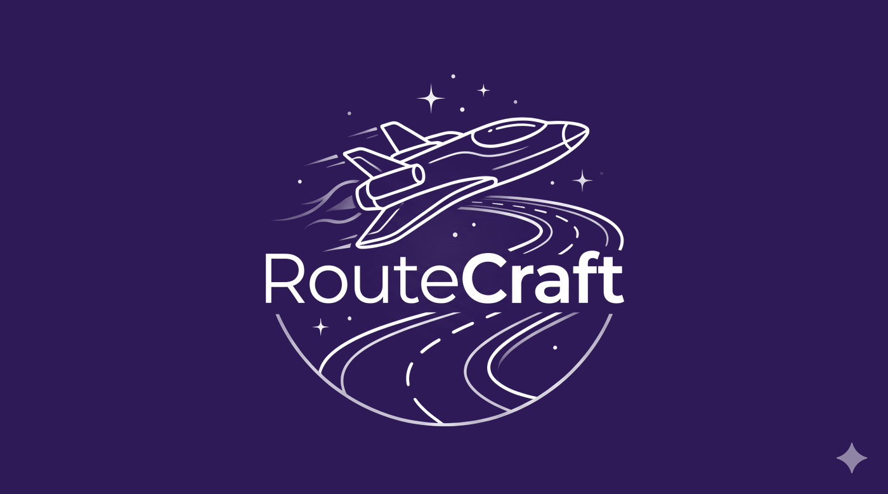
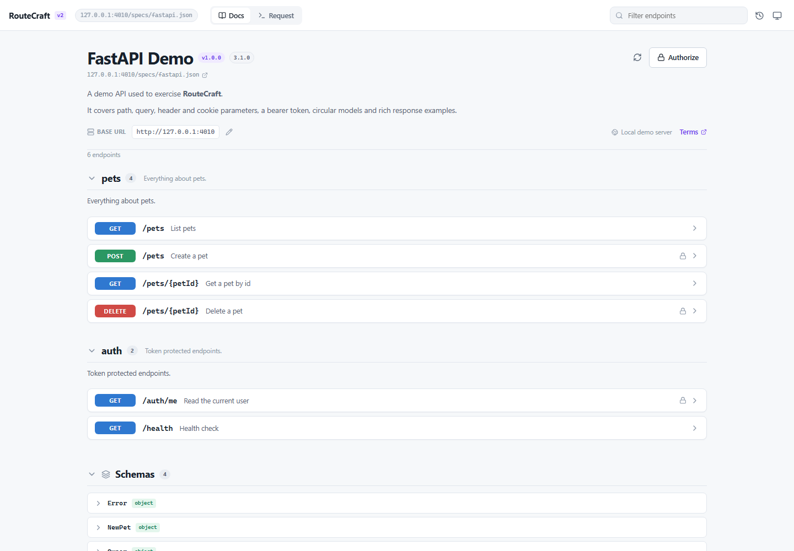
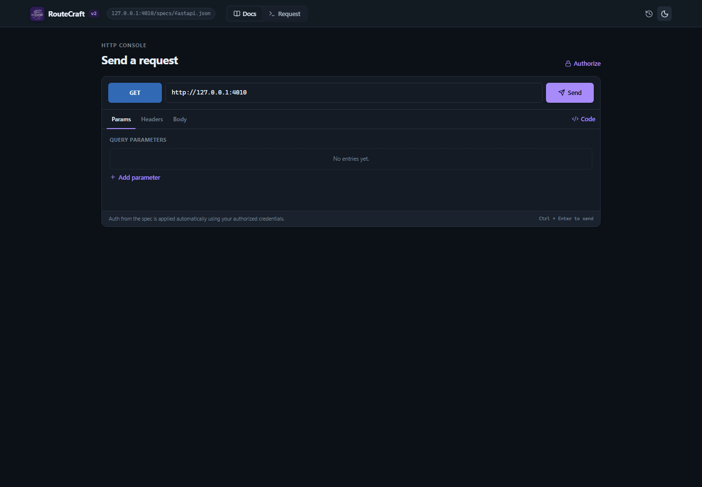

Userscript
The fastest path. Injects the full app into any page and uses GM_xmlhttpRequest for zero-CORS requests.

OpenAPI 2.0 · 3.0 · 3.1
A clean OpenAPI explorer with a built-in request console. Install the userscript once and it overlays any /docs page with a zero-CORS API client.
Works with Tampermonkey, Violentmonkey or Userscripts. No store account, payment card, backend or analytics.

Install
Use Tampermonkey, Violentmonkey, or Userscripts on Safari.
Click Install on the userscript screen. GitHub Pages serves the current routecraft.user.js directly.
Swagger UI, Redoc and FastAPI /docs pages are detected automatically.
Open the overlay from any page. Esc closes it. Browse, authorize and send without leaving the page.
What you get
$ref resolution.
GM_xmlhttpRequest reaches localhost and APIs that do not send CORS headers.

Three surfaces
The fastest path. Injects the full app into any page and uses GM_xmlhttpRequest for zero-CORS requests.
Open the app directly on GitHub Pages. Direct browser requests still follow the API's CORS policy.
Open appThe optional MV3 build adds a toolbar popup, current-tab launch and the rc address-bar shortcut.
Ready when you are
Install the userscript, open your Swagger UI or FastAPI /docs page, then press Alt + Shift + S.